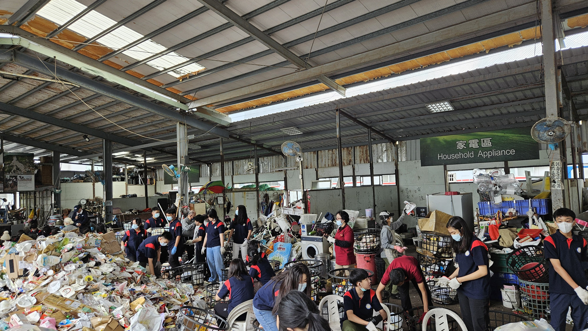
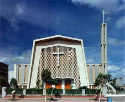

Tugas tentang 'Taipei Holy Family Catholic Church' dan 'Community Service'
Selama mengikuti edutrip community service, saya belajar cara mendaur ulang dan membedakan jenis-jenis sampah bersama para pemandu dan sukarelawan yang ramah. Tujuan kegiatan ini adalah untuk menjaga lingkungan dan mengurangi polusi serta sampah. Saya mengikuti semua kegiatan dengan baik, belajar bersama, dan berusaha menerapkan ilmunya dalam kehidupan sehari-hari. Saya jadi lebih paham tentang cara memilah sampah dan mendaur ulang.
Orang-orang di sana sangat baik dan sabar membimbing kami. Pengalaman ini mengajarkan saya untuk menyangkal diri sebagai murid Yesus, mendahulukan orang lain, membantu tanpa pamrih, dan memanggul salib—karena semua itu butuh usaha dan pengorbanan. Meski lelah, saya menjalani semuanya dengan kasih seperti Yesus, belajar menyelesaikan masalah, dan peduli pada orang lain, terutama para sukarelawan yang sudah tua.
Pengalamanku saat misa di Taipei Holy Family Catholic Church sangat baru dan menyenangkan. Saat sampai, saya langsung menyadari bangunannya berbeda dengan Gereja Santo Laurensius. Gereja Taipei terlihat lebih tua dan klasik, sedangkan Gereja Santo Laurensius tampil lebih modern.
Misa di sana menggunakan Bahasa Inggris, bukan Bahasa Indonesia. Meski caranya sedikit berbeda, inti misanya tetap sama. Gereja ini berdiri sejak tahun 1964 dan merupakan gereja Katolik terbesar dari 7 paroki di Taiwan. Nama "Holy Family" diberikan agar bisa membantu umat membangun keluarga yang bahagia. Gereja ini terletak di No. 50, Sec. 2, Xinsheng South Rd.